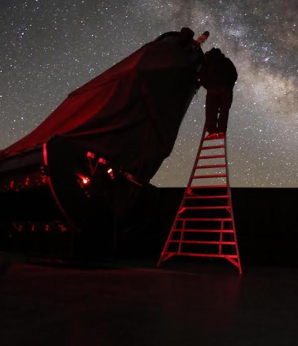
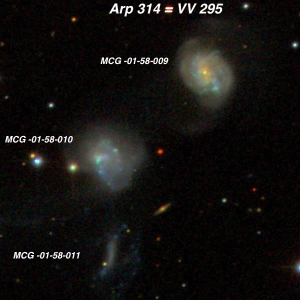
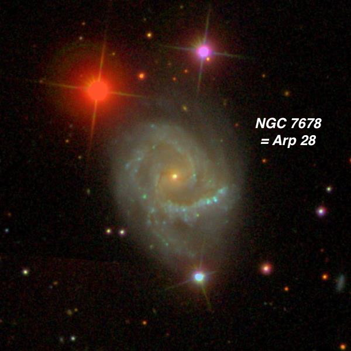
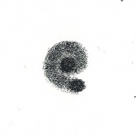
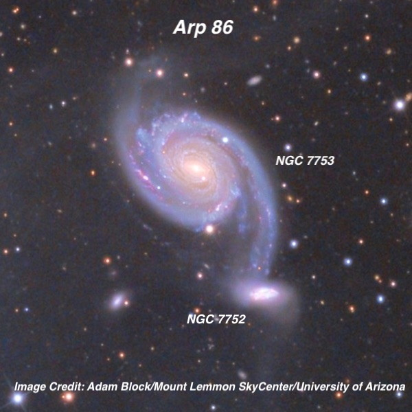
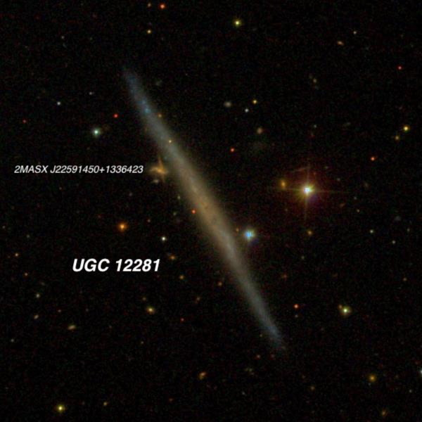
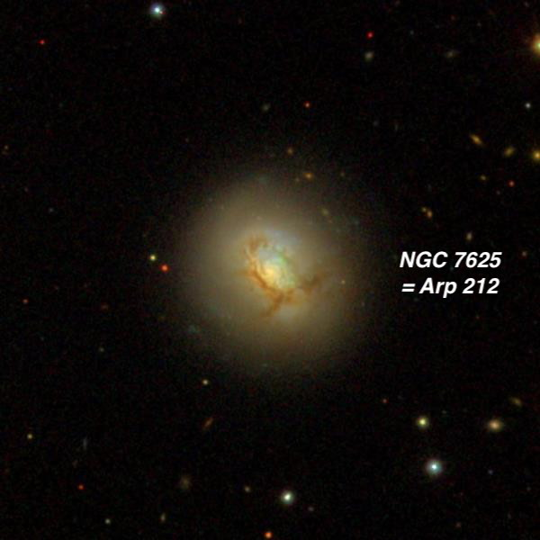

Lowrey 48 inch in October Part II
The second night in the Davis mountains of West Texas turned out to be a short one as clouds rolled in before midnight. Jimi, Howard Banich and I took turns selected interesting targets in Pegasus and Aquarius to view, including several Arps, as these often display fascinating structure in the monster scope. Except for the Adam Block image, the rest are courtesy of the Sloan Digital Sky Survey (SDSS).

As you might expect to reach the eyepiece on a scope with a 16 foot focal length (4880 mm), it requires one tall ladder (14-ft tripod style). Although the height is quite dizzying at the top during the daytime, at night we just scamper up and down repeatedly!
Steve Gottlieb

Arp 314 = VV 295 22 58 04 -03 47.4 Interacting Triple in Aquarius
Arp 314 is an interacting triplet in Aquarius at a distance of ~160 million light years. I had previously viewed the brightest two members in my 18-inch — MCG -1-58-9 and MCG -1-58-10 — but wanted to view the strange integral-shaped bar of MCG -1-58-11 . The trio was observed at 542x.
MCG -01-58-009 appeared very bright, elongated 4:3 SW-NE, ~50"x35", strong concentration with a bright elongated core and a "wooly" halo containing slightly brighter patches. MCG -01-58-010 was also bright and a similar size, but slightly fainter. It also sported a small bright core offset slightly to the east side with subtle structure in the halo. Even in the 48”, MCG -01-58-011 was just a very thin, low surface brightness streak oriented ~N-S, ~25” length and ~4” wide. It’s very low surface brightness halo wasn’t noticed.

NGC 7678 = Arp 28 = VV 359 23 28 27.9 +22 25 16; Pegasus V = 11.8; Size 2.3'x1.7'; Surf Br = 13.2; PA = 5°
William Herschel discovered NGC 7678 in September 1784 and called it “Faint, pretty large, bright middle, elliptical, between an acute triangle of pretty considerable stars." Spiral structure was first reported using Lord Rosse’s 72” Leviathan in November of 1850 and the sketch below, published in 1861, matches the general shape in the SDSS image. Halton Arp placed it in his category of "spiral galaxies with one heavy arm”, which I assume he meant the one that sweeps west (towards the left) below the core. This arm is evident visually in my 24”. The galaxy hosted 3 known supernovae in a 12 year stretch — type-Ib SN 1997dc, type-Ia SN 2002dp and type II-P SN 2009ga.

In the 48” I logged a small bright core and an extremely bright, very small nucleus containing a pinpoint stellar peak. The core was elongated WNW-ESE and appears as a weak bar. A bright thin arm was nearly attached on the east side of the "bar" and it swung counterclockwise to the south of the core. This arm was sharply defined and brightened significantly on the southwest end. The northern arm was only visible at its root near the west end of the "bar" as well as a small, detached piece on the northeast side of the halo. This observation was made in good seeing but through thin clouds.

Arp 86 = NGC 7752 and NGC 7753 23 47 02 +29° 28.3’, Pegasus 3.3’ x 2.1’ and 0.8’ x 0.5’ V = 12.0 and V = 14.2
This Pegasus duo (just north of the Great Square) is a smaller and fainter version of the famed M51 pair. The companion galaxy NGC 7752 is currently experiencing a galaxy-wide starburst due to the interaction. The H II regions in NGC 7752 have higher star formation rates than those in NGC 7753 and the stellar populations in NGC 7752 are on the order of ~10 – 100 million years. NGC 7753, a type SAB(rs)bc galaxy, has experienced 4 known supernovae, all in a relatively short period of time. SN 2006A discovered in Jan 2006. SN 2006ch, a Type Ia supernova, was discovered 4 months later. In January 2013, SN 2013Q, another Type Ia supernova was found and the Type II supernova, SN 2015ae, was detected in August 2015. A spectacular Spitzer infrared image of NGC 7753, resolving a large number of star-forming regions, is at www.jpl.nasa.gov/spaceassets/details.php?id=PIA23006 . Redshift-independent estimates vary wildly from 80 million l.y. to over 200 million l.y., but the redshift (z = .017) implies a light-travel time of 213 million years.
Overall, the main body of NGC 7753 appeared 2' diameter (slightly elongated SW-NE), but the tidally stretched arm that wrapped towards NGC 7752 increased the length to at least 2.6’. The central portion was strongly concentrated with a bright core that increased to an intense nucleus. A faint star (mag 16.5?) was visible close southwest of the nucleus.
A spiral arm was connected to the east side of the core, though it wasn't initially separated from the central region. The arm rotated sharply clockwise to the north, and was well defined as it passed directly through a mag 15 star on the north side of the halo. The arm faded as it separated away from the center and gradually curved south on the west side of the galaxy. The arm faded out just east of a mag 16.9 star [1.7' SW of center], before reaching companion NGC 7752, 2.0' SW of center.
The southern spiral arm emerged from the east or northeast side of the core. It curled tightly clockwise to the south and passed barely inside a mag 14.5 star. The arm was brightest in a strip near this star and then faded as it rotated to the east side of the galaxy.

UGC 12281 22 59 12.8 +13 36 24; Pegasus V = 14.2; Size 3.2'x0.2'; Surf Br = 13.6; PA = 30°
UGC 12281 is a superthin galaxy - a classification introduced in 1981 by astronomers Jean Goad and Morton Roberts. These very late-type spirals (Sc or Sd types) are bulgeless galaxies seen perfectly edge-on and display axial ratios from 9:1 to 20:1 Typically they have very low surface brightness, which also implies a low star formation rate. But UGC 12281 is a bit of an enigma as a it has a remarkable amount of current star formation. A recent study suggests an interaction with a nearby dwarf companion may have triggered this result. I’ve previously observed this phantom streak with my 24” from Grandview Campground in the White Mountains and even glimpsed it with my 18” on a superb night at Lassen.
In the 48” it was a faint, low surface brightness sliver, very large, ~12:1 SSW-NNE, with a length close to 2.5’. The central region was slightly brighter but there no sign of a core or nucleus. 2MASX J22591450+1336423, an extremely faint galaxy (V = 17.8) at the eastern flank on the north side [actually an overlap of two galaxies!], was suspected in windy conditions, though Jimi felt it appeared as a bulge at that location.

NGC 7625 = Arp 212 = VV 280 23 20 30.1 +17 13 32; Pegasus V = 12.1; Size 1.6'x1.4'; Surf Br = 12.8; PA = 60°
This Arp is another William Herschel discovery with quite an unusual appearance due to two apparently intersection dust lanes at nearly a right angle. The chain of dust features is a possible indication this is a polar ring galaxy. A 2008 study found a "subsystem of ionized gas located at a galactocentric distance of r = 2 to 6 kpc and consists of isolated HII regions whose orbits are tilted by significant angles to the stellar disk. Our own and published data on the kinematics of molecular, ionized, and neutral gas can be explained in terms of the following model. Most of the HI mass in the outer parts of the galaxy concentrates in a broad ring with radius of about 20 kpc.”
A total of 8 visual observations were made through Lord Rosse’s 72”, mostly commenting on the irregular surface brightness. One the descriptions reads ""south edge certainly brighter than the other, and a star or nucleus near that side, perhaps very faint nebulosity outside the south edge”. If you examine the SDSS image above, you see the “very faint nebulosity outside the south edge” is a section that is below a prominent dust lane.
In the 48” this was a prominent galaxy highlighted by a very bright, slightly elongated or oval core. A low contrast dust lane wrapped along the eastern edge of the core around to the south. The dust lane continued to slice through the galaxy towards the west, cutting off a southern piece of the galaxy, which appears like a broad spiral arm. A slightly brighter knot or patch is at the east end of this section, about 20" south of center. The outer halo was slightly fainter on the southeast side.